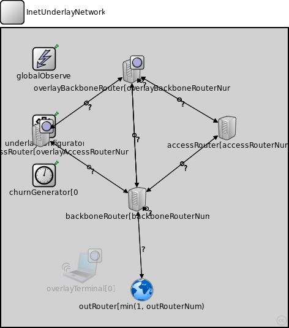
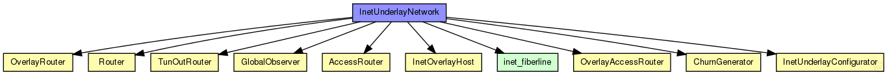
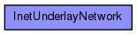

This documentation is released under the Creative Commons license
This documentation is released under the Creative Commons licenseThe InetUnderlay ned-file
See also: InetUnderlayConfigurator
The following diagram shows usage relationships between types. Unresolved types are missing from the diagram. Click here to see the full picture.
The following diagram shows inheritance relationships for this type. Unresolved types are missing from the diagram. Click here to see the full picture.
| Name | Type | Default value | Description |
|---|---|---|---|
| overlayType | string |
the overlay used in the simulation (for overlayBackboneRouters) |
|
| tier1Type | string |
the application on top of the overlay used in the simulation (for overlayBackboneRouters) |
|
| tier2Type | string |
the module type on top of tier 1 (for overlayBackboneRouters) |
|
| tier3Type | string |
the module type on top of tier 2 (for overlayBackboneRouters) |
|
| backboneRouterNum | int |
number of backbone routers in the network |
|
| accessRouterNum | int |
number of access routers in the network |
|
| overlayBackboneRouterNum | int |
number of backbone routers in the network that participate the overlay |
|
| overlayAccessRouterNum | int |
number of access routers in the network that participate the overlay |
|
| outRouterNum | int |
set to 1 if you want to use a TunOutRouter as connection to a real network |
|
| connectivity | double |
degree of connectivity of backbone routers (1 = every backbone router is connected to all the others) |
| Name | Value | Description |
|---|---|---|
| isNetwork |
| Name | Type | Default value | Description |
|---|---|---|---|
| overlayTerminal.tcp.advertisedWindow | int | 14*this.mss |
in bytes, corresponds with the maximal receiver buffer capacity (Note: normally, NIC queues should be at least this size) |
| overlayTerminal.tcp.delayedAcksEnabled | bool | false |
delayed ACK algorithm (RFC 1122) enabled/disabled |
| overlayTerminal.tcp.nagleEnabled | bool | true |
Nagle's algorithm (RFC 896) enabled/disabled |
| overlayTerminal.tcp.limitedTransmitEnabled | bool | false |
Limited Transmit algorithm (RFC 3042) enabled/disabled (can be used for TCPReno/TCPTahoe/TCPNewReno/TCPNoCongestionControl) |
| overlayTerminal.tcp.increasedIWEnabled | bool | false |
Increased Initial Window (RFC 3390) enabled/disabled |
| overlayTerminal.tcp.sackSupport | bool | false |
Selective Acknowledgment (RFC 2018, 2883, 3517) support (header option) (SACK will be enabled for a connection if both endpoints support it) |
| overlayTerminal.tcp.windowScalingSupport | bool | false |
Window Scale (RFC 1323) support (header option) (WS will be enabled for a connection if both endpoints support it) |
| overlayTerminal.tcp.timestampSupport | bool | false |
Timestamps (RFC 1323) support (header option) (TS will be enabled for a connection if both endpoints support it) |
| overlayTerminal.tcp.mss | int | 536 |
Maximum Segment Size (RFC 793) (header option) |
| overlayTerminal.tcp.tcpAlgorithmClass | string | "TCPReno" |
TCPReno/TCPTahoe/TCPNewReno/TCPNoCongestionControl/DumbTCP |
| overlayTerminal.tcp.sendQueueClass | string | "TCPVirtualDataSendQueue" |
TCPVirtualDataSendQueue/TCPMsgBasedSendQueue |
| overlayTerminal.tcp.receiveQueueClass | string | "TCPVirtualDataRcvQueue" |
TCPVirtualDataRcvQueue/TCPMsgBasedRcvQueue |
| overlayTerminal.tcp.recordStats | bool | true |
recording of seqNum etc. into output vectors enabled/disabled |
| overlayTerminal.networkLayer.ip.procDelay | double | 0s | |
| overlayTerminal.networkLayer.arp.retryTimeout | double | 1s |
number seconds ARP waits between retries to resolve an IP address |
| overlayTerminal.networkLayer.arp.retryCount | int | 3 |
number of times ARP will attempt to resolve an IP address |
| overlayTerminal.networkLayer.arp.cacheTimeout | double | 120s |
number seconds unused entries in the cache will time out |
| overlayTerminal.ppp.ppp.mtu | int | 4470 | |
| overlayTerminal.neighborCache.rpcUdpTimeout | double |
default timeout value for direct RPCs |
|
| overlayTerminal.neighborCache.rpcKeyTimeout | double |
default timeout value for routed RPCs |
|
| overlayTerminal.neighborCache.optimizeTimeouts | bool |
calculate timeouts from measured RTTs and network coordinates |
|
| overlayTerminal.neighborCache.rpcExponentialBackoff | bool |
if true, doubles the timeout for every retransmission |
|
| overlayTerminal.neighborCache.debugOutput | bool |
enable debug output |
|
| overlayTerminal.neighborCache.enableNeighborCache | bool |
use neighbor cache for reducing ping traffic? |
|
| overlayTerminal.neighborCache.rttExpirationTime | double |
expiration of the validity of the measured rtts |
|
| overlayTerminal.neighborCache.maxSize | double |
maximum size of the cache |
|
| overlayTerminal.neighborCache.rttHistory | int | ||
| overlayTerminal.neighborCache.timeoutAccuracyLimit | double | ||
| overlayTerminal.neighborCache.defaultQueryType | string | ||
| overlayTerminal.neighborCache.defaultQueryTypeI | string | ||
| overlayTerminal.neighborCache.defaultQueryTypeQ | string | ||
| overlayTerminal.neighborCache.doDiscovery | bool | ||
| overlayTerminal.neighborCache.ncsType | string | ||
| overlayTerminal.neighborCache.ncsSendBackOwnCoords | bool | ||
| overlayTerminal.neighborCache.gnpDimensions | int |
gnp settings |
|
| overlayTerminal.neighborCache.gnpCoordCalcRuns | int | ||
| overlayTerminal.neighborCache.gnpLandmarkTimeout | double | ||
| overlayTerminal.neighborCache.npsMaxLayer | int |
nps settings |
|
| overlayTerminal.neighborCache.vivaldiShowPosition | bool |
vivaldi settings |
|
| overlayTerminal.neighborCache.vivaldiErrorConst | double | ||
| overlayTerminal.neighborCache.vivaldiCoordConst | double | ||
| overlayTerminal.neighborCache.vivaldiDimConst | double | ||
| overlayTerminal.neighborCache.vivaldiEnableHeightVector | bool | ||
| overlayTerminal.neighborCache.svivaldiLossConst | double |
svivaldi settings |
|
| overlayTerminal.neighborCache.svivaldiLossResetLimit | double | ||
| overlayTerminal.neighborCache.simpleNcsDelayFaultType | string |
simpleNcs settings |
|
| overlayTerminal.bootstrapList.rpcUdpTimeout | double |
default timeout value for direct RPCs |
|
| overlayTerminal.bootstrapList.rpcKeyTimeout | double |
default timeout value for routed RPCs |
|
| overlayTerminal.bootstrapList.optimizeTimeouts | bool |
calculate timeouts from measured RTTs and network coordinates |
|
| overlayTerminal.bootstrapList.rpcExponentialBackoff | bool |
if true, doubles the timeout for every retransmission |
|
| overlayTerminal.bootstrapList.debugOutput | bool |
enable debug output |
|
| overlayTerminal.bootstrapList.mergeOverlayPartitions | bool |
if true, detect and merge overlay partitions |
|
| overlayTerminal.bootstrapList.maintainList | bool |
maintain a list of bootstrap candidates and check them periodically |
|
| overlayTerminal.cryptoModule.keyFile | string |
the name of the file containing the public key pair used to sign messages |
|
| underlayConfigurator.terminalTypes | string |
list of terminal types |
|
| underlayConfigurator.churnGeneratorTypes | string |
a list of churn generators to be used |
|
| underlayConfigurator.transitionTime | double |
time to wait before measuring after init phase is finished |
|
| underlayConfigurator.measurementTime | double |
duration of the simulation after init and transition phase |
|
| underlayConfigurator.gracefulLeaveDelay | double |
time between prekill and removal from overlay |
|
| underlayConfigurator.gracefulLeaveProbability | double |
probability of gracefull leave |
|
| underlayConfigurator.startIPv4 | string |
IP configuration starts with this IP |
|
| underlayConfigurator.startIPv6 | string | ||
| underlayConfigurator.gatewayIP | string |
IP of the gateway (if an outRouter is used) |
|
| underlayConfigurator.useIPv6Addresses | bool | false | |
| backboneRouter.networkLayer.ip.procDelay | double | 0s | |
| backboneRouter.networkLayer.arp.retryTimeout | double | 1s |
number seconds ARP waits between retries to resolve an IP address |
| backboneRouter.networkLayer.arp.retryCount | int | 3 |
number of times ARP will attempt to resolve an IP address |
| backboneRouter.networkLayer.arp.cacheTimeout | double | 120s |
number seconds unused entries in the cache will time out |
| backboneRouter.ppp.ppp.mtu | int | 4470 | |
| backboneRouter.eth.mac.promiscuous | bool | false |
if true, all packets are received, otherwise only the ones with matching destination MAC address |
| backboneRouter.eth.mac.address | string | "auto" |
MAC address as hex string (12 hex digits), or "auto". "auto" values will be replaced by a generated MAC address in init stage 0. |
| backboneRouter.eth.mac.txrate | double | 100Mbps |
maximum data rate supported by this station (bit/s); actually chosen speed may be lower due to auto- configuration. 0 means fully auto-configured. |
| backboneRouter.eth.mac.duplexEnabled | bool | true |
whether duplex mode can be enabled or not; whether MAC will actually use duplex mode depends on the result of the auto-configuration process (duplex is only possible with DTE-to-DTE connection). |
| backboneRouter.eth.mac.mtu | int | 1500 | |
| outRouter.networkLayer.ip.procDelay | double | 0s | |
| outRouter.networkLayer.arp.retryTimeout | double | 1s |
number seconds ARP waits between retries to resolve an IP address |
| outRouter.networkLayer.arp.retryCount | int | 3 |
number of times ARP will attempt to resolve an IP address |
| outRouter.networkLayer.arp.cacheTimeout | double | 120s |
number seconds unused entries in the cache will time out |
| outRouter.ppp.ppp.mtu | int | 4470 | |
| outRouter.tunDev.mtu | int |
maximum transmission unit of the underlaying network |
|
| accessRouter.accessNet.channelTypes | string |
list of (tx) channel types (from common/channels.ned) |
|
| accessRouter.accessNet.channelTypesRx | string |
list of (rx) channel types (from common/channels.ned) |
|
| accessRouter.accessNet.useIPv6Addresses | bool | false | |
| accessRouter.networkLayer.ip.procDelay | double | 0s | |
| accessRouter.networkLayer.arp.retryTimeout | double | 1s |
number seconds ARP waits between retries to resolve an IP address |
| accessRouter.networkLayer.arp.retryCount | int | 3 |
number of times ARP will attempt to resolve an IP address |
| accessRouter.networkLayer.arp.cacheTimeout | double | 120s |
number seconds unused entries in the cache will time out |
| accessRouter.ppp.ppp.mtu | int | 4470 | |
| accessRouter.eth.mac.promiscuous | bool | false |
if true, all packets are received, otherwise only the ones with matching destination MAC address |
| accessRouter.eth.mac.address | string | "auto" |
MAC address as hex string (12 hex digits), or "auto". "auto" values will be replaced by a generated MAC address in init stage 0. |
| accessRouter.eth.mac.txrate | double | 100Mbps |
maximum data rate supported by this station (bit/s); actually chosen speed may be lower due to auto- configuration. 0 means fully auto-configured. |
| accessRouter.eth.mac.duplexEnabled | bool | true |
whether duplex mode can be enabled or not; whether MAC will actually use duplex mode depends on the result of the auto-configuration process (duplex is only possible with DTE-to-DTE connection). |
| accessRouter.eth.mac.mtu | int | 1500 | |
| overlayAccessRouter.accessNet.channelTypes | string |
list of (tx) channel types (from common/channels.ned) |
|
| overlayAccessRouter.accessNet.channelTypesRx | string |
list of (rx) channel types (from common/channels.ned) |
|
| overlayAccessRouter.accessNet.useIPv6Addresses | bool | false | |
| overlayAccessRouter.tcp.advertisedWindow | int | 14*this.mss |
in bytes, corresponds with the maximal receiver buffer capacity (Note: normally, NIC queues should be at least this size) |
| overlayAccessRouter.tcp.delayedAcksEnabled | bool | false |
delayed ACK algorithm (RFC 1122) enabled/disabled |
| overlayAccessRouter.tcp.nagleEnabled | bool | true |
Nagle's algorithm (RFC 896) enabled/disabled |
| overlayAccessRouter.tcp.limitedTransmitEnabled | bool | false |
Limited Transmit algorithm (RFC 3042) enabled/disabled (can be used for TCPReno/TCPTahoe/TCPNewReno/TCPNoCongestionControl) |
| overlayAccessRouter.tcp.increasedIWEnabled | bool | false |
Increased Initial Window (RFC 3390) enabled/disabled |
| overlayAccessRouter.tcp.sackSupport | bool | false |
Selective Acknowledgment (RFC 2018, 2883, 3517) support (header option) (SACK will be enabled for a connection if both endpoints support it) |
| overlayAccessRouter.tcp.windowScalingSupport | bool | false |
Window Scale (RFC 1323) support (header option) (WS will be enabled for a connection if both endpoints support it) |
| overlayAccessRouter.tcp.timestampSupport | bool | false |
Timestamps (RFC 1323) support (header option) (TS will be enabled for a connection if both endpoints support it) |
| overlayAccessRouter.tcp.mss | int | 536 |
Maximum Segment Size (RFC 793) (header option) |
| overlayAccessRouter.tcp.tcpAlgorithmClass | string | "TCPReno" |
TCPReno/TCPTahoe/TCPNewReno/TCPNoCongestionControl/DumbTCP |
| overlayAccessRouter.tcp.sendQueueClass | string | "TCPVirtualDataSendQueue" |
TCPVirtualDataSendQueue/TCPMsgBasedSendQueue |
| overlayAccessRouter.tcp.receiveQueueClass | string | "TCPVirtualDataRcvQueue" |
TCPVirtualDataRcvQueue/TCPMsgBasedRcvQueue |
| overlayAccessRouter.tcp.recordStats | bool | true |
recording of seqNum etc. into output vectors enabled/disabled |
| overlayAccessRouter.networkLayer.ip.procDelay | double | 0s | |
| overlayAccessRouter.networkLayer.arp.retryTimeout | double | 1s |
number seconds ARP waits between retries to resolve an IP address |
| overlayAccessRouter.networkLayer.arp.retryCount | int | 3 |
number of times ARP will attempt to resolve an IP address |
| overlayAccessRouter.networkLayer.arp.cacheTimeout | double | 120s |
number seconds unused entries in the cache will time out |
| overlayAccessRouter.ppp.ppp.mtu | int | 4470 | |
| overlayAccessRouter.eth.mac.promiscuous | bool | false |
if true, all packets are received, otherwise only the ones with matching destination MAC address |
| overlayAccessRouter.eth.mac.address | string | "auto" |
MAC address as hex string (12 hex digits), or "auto". "auto" values will be replaced by a generated MAC address in init stage 0. |
| overlayAccessRouter.eth.mac.txrate | double | 100Mbps |
maximum data rate supported by this station (bit/s); actually chosen speed may be lower due to auto- configuration. 0 means fully auto-configured. |
| overlayAccessRouter.eth.mac.duplexEnabled | bool | true |
whether duplex mode can be enabled or not; whether MAC will actually use duplex mode depends on the result of the auto-configuration process (duplex is only possible with DTE-to-DTE connection). |
| overlayAccessRouter.eth.mac.mtu | int | 1500 | |
| overlayAccessRouter.neighborCache.rpcUdpTimeout | double |
default timeout value for direct RPCs |
|
| overlayAccessRouter.neighborCache.rpcKeyTimeout | double |
default timeout value for routed RPCs |
|
| overlayAccessRouter.neighborCache.optimizeTimeouts | bool |
calculate timeouts from measured RTTs and network coordinates |
|
| overlayAccessRouter.neighborCache.rpcExponentialBackoff | bool |
if true, doubles the timeout for every retransmission |
|
| overlayAccessRouter.neighborCache.debugOutput | bool |
enable debug output |
|
| overlayAccessRouter.neighborCache.enableNeighborCache | bool |
use neighbor cache for reducing ping traffic? |
|
| overlayAccessRouter.neighborCache.rttExpirationTime | double |
expiration of the validity of the measured rtts |
|
| overlayAccessRouter.neighborCache.maxSize | double |
maximum size of the cache |
|
| overlayAccessRouter.neighborCache.rttHistory | int | ||
| overlayAccessRouter.neighborCache.timeoutAccuracyLimit | double | ||
| overlayAccessRouter.neighborCache.defaultQueryType | string | ||
| overlayAccessRouter.neighborCache.defaultQueryTypeI | string | ||
| overlayAccessRouter.neighborCache.defaultQueryTypeQ | string | ||
| overlayAccessRouter.neighborCache.doDiscovery | bool | ||
| overlayAccessRouter.neighborCache.ncsType | string | ||
| overlayAccessRouter.neighborCache.ncsSendBackOwnCoords | bool | ||
| overlayAccessRouter.neighborCache.gnpDimensions | int |
gnp settings |
|
| overlayAccessRouter.neighborCache.gnpCoordCalcRuns | int | ||
| overlayAccessRouter.neighborCache.gnpLandmarkTimeout | double | ||
| overlayAccessRouter.neighborCache.npsMaxLayer | int |
nps settings |
|
| overlayAccessRouter.neighborCache.vivaldiShowPosition | bool |
vivaldi settings |
|
| overlayAccessRouter.neighborCache.vivaldiErrorConst | double | ||
| overlayAccessRouter.neighborCache.vivaldiCoordConst | double | ||
| overlayAccessRouter.neighborCache.vivaldiDimConst | double | ||
| overlayAccessRouter.neighborCache.vivaldiEnableHeightVector | bool | ||
| overlayAccessRouter.neighborCache.svivaldiLossConst | double |
svivaldi settings |
|
| overlayAccessRouter.neighborCache.svivaldiLossResetLimit | double | ||
| overlayAccessRouter.neighborCache.simpleNcsDelayFaultType | string |
simpleNcs settings |
|
| overlayAccessRouter.bootstrapList.rpcUdpTimeout | double |
default timeout value for direct RPCs |
|
| overlayAccessRouter.bootstrapList.rpcKeyTimeout | double |
default timeout value for routed RPCs |
|
| overlayAccessRouter.bootstrapList.optimizeTimeouts | bool |
calculate timeouts from measured RTTs and network coordinates |
|
| overlayAccessRouter.bootstrapList.rpcExponentialBackoff | bool |
if true, doubles the timeout for every retransmission |
|
| overlayAccessRouter.bootstrapList.debugOutput | bool |
enable debug output |
|
| overlayAccessRouter.bootstrapList.mergeOverlayPartitions | bool |
if true, detect and merge overlay partitions |
|
| overlayAccessRouter.bootstrapList.maintainList | bool |
maintain a list of bootstrap candidates and check them periodically |
|
| overlayAccessRouter.cryptoModule.keyFile | string |
the name of the file containing the public key pair used to sign messages |
|
| overlayBackboneRouter.tcp.advertisedWindow | int | 14*this.mss |
in bytes, corresponds with the maximal receiver buffer capacity (Note: normally, NIC queues should be at least this size) |
| overlayBackboneRouter.tcp.delayedAcksEnabled | bool | false |
delayed ACK algorithm (RFC 1122) enabled/disabled |
| overlayBackboneRouter.tcp.nagleEnabled | bool | true |
Nagle's algorithm (RFC 896) enabled/disabled |
| overlayBackboneRouter.tcp.limitedTransmitEnabled | bool | false |
Limited Transmit algorithm (RFC 3042) enabled/disabled (can be used for TCPReno/TCPTahoe/TCPNewReno/TCPNoCongestionControl) |
| overlayBackboneRouter.tcp.increasedIWEnabled | bool | false |
Increased Initial Window (RFC 3390) enabled/disabled |
| overlayBackboneRouter.tcp.sackSupport | bool | false |
Selective Acknowledgment (RFC 2018, 2883, 3517) support (header option) (SACK will be enabled for a connection if both endpoints support it) |
| overlayBackboneRouter.tcp.windowScalingSupport | bool | false |
Window Scale (RFC 1323) support (header option) (WS will be enabled for a connection if both endpoints support it) |
| overlayBackboneRouter.tcp.timestampSupport | bool | false |
Timestamps (RFC 1323) support (header option) (TS will be enabled for a connection if both endpoints support it) |
| overlayBackboneRouter.tcp.mss | int | 536 |
Maximum Segment Size (RFC 793) (header option) |
| overlayBackboneRouter.tcp.tcpAlgorithmClass | string | "TCPReno" |
TCPReno/TCPTahoe/TCPNewReno/TCPNoCongestionControl/DumbTCP |
| overlayBackboneRouter.tcp.sendQueueClass | string | "TCPVirtualDataSendQueue" |
TCPVirtualDataSendQueue/TCPMsgBasedSendQueue |
| overlayBackboneRouter.tcp.receiveQueueClass | string | "TCPVirtualDataRcvQueue" |
TCPVirtualDataRcvQueue/TCPMsgBasedRcvQueue |
| overlayBackboneRouter.tcp.recordStats | bool | true |
recording of seqNum etc. into output vectors enabled/disabled |
| overlayBackboneRouter.networkLayer.ip.procDelay | double | 0s | |
| overlayBackboneRouter.networkLayer.arp.retryTimeout | double | 1s |
number seconds ARP waits between retries to resolve an IP address |
| overlayBackboneRouter.networkLayer.arp.retryCount | int | 3 |
number of times ARP will attempt to resolve an IP address |
| overlayBackboneRouter.networkLayer.arp.cacheTimeout | double | 120s |
number seconds unused entries in the cache will time out |
| overlayBackboneRouter.ppp.ppp.mtu | int | 4470 | |
| overlayBackboneRouter.neighborCache.rpcUdpTimeout | double |
default timeout value for direct RPCs |
|
| overlayBackboneRouter.neighborCache.rpcKeyTimeout | double |
default timeout value for routed RPCs |
|
| overlayBackboneRouter.neighborCache.optimizeTimeouts | bool |
calculate timeouts from measured RTTs and network coordinates |
|
| overlayBackboneRouter.neighborCache.rpcExponentialBackoff | bool |
if true, doubles the timeout for every retransmission |
|
| overlayBackboneRouter.neighborCache.debugOutput | bool |
enable debug output |
|
| overlayBackboneRouter.neighborCache.enableNeighborCache | bool |
use neighbor cache for reducing ping traffic? |
|
| overlayBackboneRouter.neighborCache.rttExpirationTime | double |
expiration of the validity of the measured rtts |
|
| overlayBackboneRouter.neighborCache.maxSize | double |
maximum size of the cache |
|
| overlayBackboneRouter.neighborCache.rttHistory | int | ||
| overlayBackboneRouter.neighborCache.timeoutAccuracyLimit | double | ||
| overlayBackboneRouter.neighborCache.defaultQueryType | string | ||
| overlayBackboneRouter.neighborCache.defaultQueryTypeI | string | ||
| overlayBackboneRouter.neighborCache.defaultQueryTypeQ | string | ||
| overlayBackboneRouter.neighborCache.doDiscovery | bool | ||
| overlayBackboneRouter.neighborCache.ncsType | string | ||
| overlayBackboneRouter.neighborCache.ncsSendBackOwnCoords | bool | ||
| overlayBackboneRouter.neighborCache.gnpDimensions | int |
gnp settings |
|
| overlayBackboneRouter.neighborCache.gnpCoordCalcRuns | int | ||
| overlayBackboneRouter.neighborCache.gnpLandmarkTimeout | double | ||
| overlayBackboneRouter.neighborCache.npsMaxLayer | int |
nps settings |
|
| overlayBackboneRouter.neighborCache.vivaldiShowPosition | bool |
vivaldi settings |
|
| overlayBackboneRouter.neighborCache.vivaldiErrorConst | double | ||
| overlayBackboneRouter.neighborCache.vivaldiCoordConst | double | ||
| overlayBackboneRouter.neighborCache.vivaldiDimConst | double | ||
| overlayBackboneRouter.neighborCache.vivaldiEnableHeightVector | bool | ||
| overlayBackboneRouter.neighborCache.svivaldiLossConst | double |
svivaldi settings |
|
| overlayBackboneRouter.neighborCache.svivaldiLossResetLimit | double | ||
| overlayBackboneRouter.neighborCache.simpleNcsDelayFaultType | string |
simpleNcs settings |
|
| overlayBackboneRouter.bootstrapList.rpcUdpTimeout | double |
default timeout value for direct RPCs |
|
| overlayBackboneRouter.bootstrapList.rpcKeyTimeout | double |
default timeout value for routed RPCs |
|
| overlayBackboneRouter.bootstrapList.optimizeTimeouts | bool |
calculate timeouts from measured RTTs and network coordinates |
|
| overlayBackboneRouter.bootstrapList.rpcExponentialBackoff | bool |
if true, doubles the timeout for every retransmission |
|
| overlayBackboneRouter.bootstrapList.debugOutput | bool |
enable debug output |
|
| overlayBackboneRouter.bootstrapList.mergeOverlayPartitions | bool |
if true, detect and merge overlay partitions |
|
| overlayBackboneRouter.bootstrapList.maintainList | bool |
maintain a list of bootstrap candidates and check them periodically |
|
| overlayBackboneRouter.cryptoModule.keyFile | string |
the name of the file containing the public key pair used to sign messages |
|
| churnGenerator.targetOverlayTerminalNum | int |
number of nodes after init phase |
|
| churnGenerator.initPhaseCreationInterval | double |
node creation interval in init phase |
|
| churnGenerator.noChurnThreshold | double |
if the lifetimeMean of a specific churn generator exceeds this, NoChurn is used instead |
|
| churnGenerator.channelTypes | string |
used (tx) access technologies (from common/channels.ned) |
|
| churnGenerator.channelTypesRx | string |
used (rx) access technologies (from common/channels.ned) |
|
| globalObserver.globalNodeList.maliciousNodeProbability | double |
probability for a node to be malicious on creation |
|
| globalObserver.globalNodeList.maliciousNodeChange | bool |
dynamically change number of malicious nodes |
|
| globalObserver.globalNodeList.maliciousNodeChangeStartTime | double |
simTime at which nodes begin to become malicious |
|
| globalObserver.globalNodeList.maliciousNodeChangeRate | double |
number of nodes to change to malicious compared to all nodes |
|
| globalObserver.globalNodeList.maliciousNodeChangeInterval | double |
time between two node changes to malicious |
|
| globalObserver.globalNodeList.maliciousNodeChangeStartValue | double |
minimum amount of malicious nodes in the peerSet |
|
| globalObserver.globalNodeList.maliciousNodeChangeStopValue | double |
maximum amount of malicious nodes in the peerSet |
|
| globalObserver.globalNodeList.maxNumberOfKeys | int |
maximum number of overlay keys the bootstrap oracle handles |
|
| globalObserver.globalNodeList.keyProbability | double |
probability of keys to be owned by nodes |
|
| globalObserver.globalParameters.rpcUdpTimeout | double |
default timeout value for direct RPCs |
|
| globalObserver.globalParameters.rpcKeyTimeout | double |
default timeout value for routed RPCs |
|
| globalObserver.globalParameters.printStateToStdOut | bool |
print overlay ready messages to std::cout |
|
| globalObserver.globalParameters.topologyAdaptation | bool |
turn on topologyAdaptation (for demonstrator) |
|
| globalObserver.globalTraceManager.traceFile | string |
file name of the trace file |
|
| globalObserver.globalStatistics.outputMinMax | bool |
enable output of minimum and maximum for scalars |
|
| globalObserver.globalStatistics.outputStdDev | bool |
enable output of standard deviation for scalars |
|
| globalObserver.globalStatistics.measureNetwInitPhase | bool |
fetch statistics in init phase? |
|
| globalObserver.globalStatistics.globalStatTimerInterval | double |
interval length of periodic statistic timer |
// // The InetUnderlay ned-file @see InetUnderlayConfigurator // network InetUnderlayNetwork { parameters: string overlayType; // the overlay used in the simulation (for overlayBackboneRouters) string tier1Type; // the application on top of the overlay used in the simulation (for overlayBackboneRouters) string tier2Type; // the module type on top of tier 1 (for overlayBackboneRouters) string tier3Type; // the module type on top of tier 2 (for overlayBackboneRouters) int backboneRouterNum; // number of backbone routers in the network int accessRouterNum; // number of access routers in the network int overlayBackboneRouterNum; // number of backbone routers in the network that participate the overlay int overlayAccessRouterNum; // number of access routers in the network that participate the overlay int outRouterNum; // set to 1 if you want to use a TunOutRouter as connection to a real network double connectivity; // degree of connectivity of backbone routers (1 = every backbone router is connected to all the others) submodules: overlayTerminal[0]: InetOverlayHost { @dynamic; } underlayConfigurator: InetUnderlayConfigurator { @display("p=70,160"); } backboneRouter[backboneRouterNum]: Router { parameters: @display("i=device/server2"); } outRouter[min(1, outRouterNum)]: TunOutRouter; accessRouter[accessRouterNum]: AccessRouter { parameters: @display("i=device/server2,gray,30"); } overlayAccessRouter[overlayAccessRouterNum]: OverlayAccessRouter { parameters: overlayType = overlayType; // the overlay used in the simulation tier1Type = tier1Type; // the application on top off the overly used in the simulation tier2Type = tier2Type; // tier 2 module to use tier3Type = tier3Type; // tier 3 module to use @display("i=device/server2,gray,30;i2=block/circle_s"); } overlayBackboneRouter[overlayBackboneRouterNum]: OverlayRouter { parameters: overlayType = overlayType; // the overlay used in the simulation tier1Type = tier1Type; // the application on top off the overly used in the simulation tier2Type = tier2Type; // tier 2 module to use tier3Type = tier3Type; // tier 3 module to use @display("i=device/server2;i2=block/circle_s"); } churnGenerator[0]: ChurnGenerator { @display("p=70,240,column"); } globalObserver: GlobalObserver { parameters: @display("i=block/control;p=70,50"); } connections allowunconnected: // // BACKBONE ROUTER // // connect outRouter to a backboneRouter backboneRouter[0].pppg$o++ --> inet_fiberline --> outRouter[0].pppg$i++ if outRouterNum>0; backboneRouter[0].pppg$i++ <-- inet_fiberline <-- outRouter[0].pppg$o++ if outRouterNum>0; // connect backboneRouters with other backboneRouters for i=0..backboneRouterNum-1, for j=0..backboneRouterNum-1 { backboneRouter[i].pppg$o++ --> inet_fiberline --> backboneRouter[j].pppg$i++ if i<j&&uniform2(0, 1, i, 1)<=connectivity; backboneRouter[i].pppg$i++ <-- inet_fiberline <-- backboneRouter[j].pppg$o++ if i<j&&uniform2(0, 1, i, 0)<=connectivity; } // connect backboneRouters with overlayBackboneRouters for i=0..backboneRouterNum-1, for j=0..overlayBackboneRouterNum-1 { backboneRouter[i].pppg$o++ --> inet_fiberline --> overlayBackboneRouter[j].pppg$i++ if i<=j&&uniform2(0, 1, i, 0)<=connectivity; backboneRouter[i].pppg$i++ <-- inet_fiberline <-- overlayBackboneRouter[j].pppg$o++ if i<=j&&uniform2(0, 1, i, 0)<=connectivity; } // connect overlayBackboneRouters with backboneRouters for i=0..overlayBackboneRouterNum-1, for j=0..backboneRouterNum-1 { overlayBackboneRouter[i].pppg$o++ --> inet_fiberline --> backboneRouter[j].pppg$i++ if i<j&&uniform2(0, 1, i, 1)<=connectivity; overlayBackboneRouter[i].pppg$i++ <-- inet_fiberline <-- backboneRouter[j].pppg$o++ if i<j&&uniform2(0, 1, i, 0)<=connectivity; } // connect overlayBackboneRouters with other overlayBackboneRouters for i=0..overlayBackboneRouterNum-1, for j=0..overlayBackboneRouterNum-1 { overlayBackboneRouter[i].pppg$o++ --> inet_fiberline --> overlayBackboneRouter[j].pppg$i++ if i<j&&uniform2(0, 1, i, 0)<=connectivity; overlayBackboneRouter[i].pppg$i++ <-- inet_fiberline <-- overlayBackboneRouter[j].pppg$o++ if i<j&&uniform2(0, 1, i, 0)<=connectivity; } // // ACCESS ROUTER // // connect accessRouters with backboneRouters for i=0..accessRouterNum-1 { accessRouter[i].pppg$o++ --> inet_fiberline --> backboneRouter[intuniform2(0, backboneRouterNum-1, 0, 1)].pppg$i++ if uniform2(0, 1, i, 1)>overlayBackboneRouterNum/(overlayBackboneRouterNum+backboneRouterNum); accessRouter[i].pppg$i++ <-- inet_fiberline <-- backboneRouter[intuniform2(0, backboneRouterNum-1, 0, 0)].pppg$o++ if uniform2(0, 1, i, 0)>overlayBackboneRouterNum/(overlayBackboneRouterNum+backboneRouterNum); } // connect accessRouters with overlayBackboneRouters for i=0..accessRouterNum-1 { accessRouter[i].pppg$o++ --> inet_fiberline --> overlayBackboneRouter[intuniform2(0, overlayBackboneRouterNum-1, 0, 1)].pppg$i++ if uniform2(0, 1, i, 0)<=overlayBackboneRouterNum/(overlayBackboneRouterNum+backboneRouterNum); accessRouter[i].pppg$i++ <-- inet_fiberline <-- overlayBackboneRouter[intuniform2(0, overlayBackboneRouterNum-1, 0, 0)].pppg$o++ if uniform2(0, 1, i, 0)<=overlayBackboneRouterNum/(overlayBackboneRouterNum+backboneRouterNum); } // connect overlayAccessRouters with backboneRouters for i=0..overlayAccessRouterNum-1 { overlayAccessRouter[i].pppg$o++ --> inet_fiberline --> backboneRouter[intuniform2(0, backboneRouterNum-1, 0, 1)].pppg$i++ if uniform2(0, 1, i, 1)>overlayBackboneRouterNum/(overlayBackboneRouterNum+backboneRouterNum); overlayAccessRouter[i].pppg$i++ <-- inet_fiberline <-- backboneRouter[intuniform2(0, backboneRouterNum-1, 0, 0)].pppg$o++ if uniform2(0, 1, i, 0)>overlayBackboneRouterNum/(overlayBackboneRouterNum+backboneRouterNum); } // connect overlayAccessRouters with overlayBackboneRouters for i=0..overlayAccessRouterNum-1 { overlayAccessRouter[i].pppg$o++ --> inet_fiberline --> overlayBackboneRouter[intuniform2(0, overlayBackboneRouterNum-1, 0, 1)].pppg$i++ if uniform2(0, 1, i, 0)<=overlayBackboneRouterNum/(overlayBackboneRouterNum+backboneRouterNum); overlayAccessRouter[i].pppg$i++ <-- inet_fiberline <-- overlayBackboneRouter[intuniform2(0, overlayBackboneRouterNum-1, 0, 0)].pppg$o++ if uniform2(0, 1, i, 0)<=overlayBackboneRouterNum/(overlayBackboneRouterNum+backboneRouterNum); } }
This documentation is released under the Creative Commons license